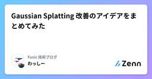
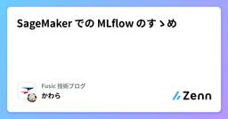

Fusic 技術ブログのフィード
https://zenn.dev/p/fusic
さまざまな個性を受け入れて有機的につなぐ社内環境を整える。あらゆる事業機会の創出と実現を繰り返し、世の中に対する視点を絶えず増やして成長していく。あっと驚くような角度から発展できるポイントを見つけ、そこにいい感じにフィットする形でテクノロジーを組み込んで、世の中をちょっとずつ、時
フィード
LoRAより良いLLMモデルのFine-tuning方法はありませんか？
Fusic 技術ブログのフィード
この記事は、Fusic Advent Calendar 2024 18日目の記事です。 前言最近、「Bone微調整」という技術がLoRA微調整と比較して、より速く、そして効果的であることが分かりました。この技術について詳しく説明していきます。LoRAは、その資源節約効果と性能の良さから広く使用されてきました。その派生手法として、全パラメータ微調整との差を改善することを目指したOLoRAやLoRA-Gaなどがあります。これまで低ランク微調整手法の最適化は極限に達しているように見えました。しかし、先月（2024年11月）、低ランク微調整とは完全に異なる新しい効率的な微調整方法が登場し...
3日前

Gaussian Splatting 改善のアイデアをまとめてみた
Fusic 技術ブログのフィード
こんにちは、最近、3D, 音声関連の機械学習にはまっている、わっしーです。Fusicのアドベントカレンダー 16日目の記事です！昔ながらのMulti View Stereoに比べるとNeRFの凄さに数年前に驚いたのですが、計算コストの大きさから手を出すのを躊躇していました。しかし、Gaussian Splatting (GS)が登場し、計算コストを抑えつつ、NeRFに匹敵する精度を出すことができるということで、最近はGSに注目しています。特に、GSの精度の良さから、mesh化を行いBlenderなどで使用できるようにしたいと考えています。しかし、GSで学習されたガウシアンの点群を...
5日前

SageMaker での MLflow のすゝめ
Fusic 技術ブログのフィード
こんにちは、初めましての方は初めまして。株式会社 Fusic の瓦です。12/14 に沖縄で開催されたスパルタンレースに参加して何とかゴールまでたどり着きました。普段パソコンばっかり触っていると筋力を使う場面がほとんどないので、その日に筋肉痛になるくらい力を使ってかなりいいリフレッシュになりました。今回参加したのは SUPER コースだったので、また機会があれば SPRINT と BEAST にも挑戦したいと思っています。この記事は「Japan AWS Jr. Champions Advent Calendar 2024」の 14 日目の記事で、SageMaker マネージドの ML...
5日前

IoTで防犯対策！SORACOMとM5StampC3で自宅を守れるか？
Fusic 技術ブログのフィード
本記事はSORACOM Advent Calendar 2024の11日目の記事です。世の中には2種類の人間がいます。「窓の施錠をまったく気にしない人間」と「窓の施錠が気になってしまい何度も確認する人間」です。無論、私は後者です。「闇バイト」「空き巣」「強盗」。2024年はそういった物騒なニュースを多く目にした年だったように思います。犯罪の手法は多様化していますが、きちんと戸締まりをするだけで防げる犯罪は多いはずです。「IoTで戸締まりを自動化」というのは誰でも一度は考えたことがあるのではないでしょうか。実際、窓やドアを取り扱うYKK AP 株式会社はミモットという戸締り安心シス...
10日前
Amazon Bedrock カスタムモデルを試してみる
Fusic 技術ブログのフィード
こんにちは、初めましての方は初めまして。株式会社 Fusic の瓦です。寒さは体を動かせばなんとかなると自分に言い聞かせて（12 月とは思えないほど暖かいというのもあって）何とかまだ暖房を付けずに済んでいます。この記事は「Amazon Bedrock Advent Calendar 2024」の八日目の記事で、Amazon Bedrock のカスタムモデルを試してみたものとなっています。最初に断っておきますが、精度についてはあまりよくなっていません。 データをもうちょっとちゃんと整形しないといけないのか、パラメータをもっと調整しないといけないのか、そもそもこのデータセットでは難しいのか...
12日前
EKSでVeleroを使ったリストアを試してみる
Fusic 技術ブログのフィード
この記事は、Fusic Advent Calendar 2024 8日目の記事です。re:Inventで発表されたハイブリッドノードを試したい今日このごろですが、今回は以下のAWSブログを参考に、EKSにおけるバックアップ・リストアを作成してみたいと思います。https://aws.amazon.com/jp/blogs/news/backup-and-restore-your-amazon-eks-cluster-resources-using-velero/図で表すと以下のような構成を今回の検証では作成します。 環境AWS CLI: 2.22.12eksctl: 0....
13日前
Amazon Bedrock Knowledge Basesがストリーミングレスポンスに対応しました
Fusic 技術ブログのフィード
Amazon Bedrock Knowledge Basesがストリーミングレスポンスに対応したので、試してみました。https://aws.amazon.com/about-aws/whats-new/2024/12/amazon-bedrock-knowledge-bases-streaming-retrieveandgeneratestream-api/ 何ができるのか今まででAmazon Bedrock Knowledge Basesでストリーミングレスポンスに対応する場合、retrieve apiでKBから結果を取得しプロンプトを生成し、そのプロンプトをinvoke_m...
13日前
Amazon Bedrock Knowledge Basesが構造化データのクエリに対応したので試してみた
Fusic 技術ブログのフィード
Amazon Bedrock Knowledge Basesが構造化データのクエリに対応したので、試してみました。https://aws.amazon.com/jp/about-aws/whats-new/2024/12/amazon-bedrock-knowledge-bases-structured-data-retrieval/ 何ができるか自然言語クエリを使用して構造化データの取得がサポートされるようになりました。これにより、自然言語からSQL（NL2SQL）を生成し、構造化データにアクセスできます。イメージ図今まで構造化データにアクセスするには、Bedrockで質...
14日前
Fixstars Amplify SEを使ったJSPの求解
Fusic 技術ブログのフィード
この記事は、Fusic Advent Calendar 2024 5日目の記事です。こんにちは！Fusic 機械学習チームの塚本です。機械学習モデルの開発から運用までなんでもしています。もし、機械学習で困っていることがあれば、気軽にお問い合わせください。以前、JSPのためのグラフ表現という記事を出しました。そこでは、キチンと定式化を行ったり、CBCを使って厳密解を求めるなどやっていました。今回は、定式化や実装部分をおおよそカバーされているFixstars Amplify SE(Scheduling Engine)を使って実装していきます。実装と言っても、書いた通り、ほとん...
16日前
Amazon Bedrock Data Automation(プレビュー)を試してみた
Fusic 技術ブログのフィード
Amazon Bedrock Data Automation(プレビュー)がリリースされたので、試してみました。https://aws.amazon.com/jp/bedrock/bda/ Bedrock Data Automation(BDA)とはAmazon Bedrock Data Automation (以下BDA)は、ドキュメント、画像、音声、動画などの非構造化マルチモーダルコンテンツからデータを抽出するプロセスを簡略化するサービスです。この機能はKnowledge Baseと統合できるので、非構造化データから意味のある洞察を効率的に生成でき、RAGにおいてより関連性の...
16日前
オハイオリージョンのBedrockが速くなったそうなので、実際に試してみた
Fusic 技術ブログのフィード
Monday Night Live with Peter DeSantisで「オハイオリージョンのBedrockが速くなったよ」と言ってたので、実際に試してみました。https://aws.amazon.com/jp/about-aws/whats-new/2024/12/latency-optimized-inference-foundation-models-amazon-bedrock/ 事前準備オハイオリージョンのClaude 3.5 Haikuを有効化オハイオリージョンのLlama 3.1 405Bを有効化オハイオリージョンのLlama 3.1 70Bを有効化...
18日前
Amazon Bedrock Knowledge BasesでCohereのRerank試してみた
Fusic 技術ブログのフィード
Amazon Bedrock Knowledge BasesでCohereのRerankが使用できるようになったので、試してみました。https://awscli.amazonaws.com/v2/documentation/api/latest/reference/bedrock-agent-runtime/retrieve.html!本ブログでは性能比較はしません。 事前準備boto3のバージョンを1.35.72に更新するCohereのRerankモデルを有効化する 実際に使ってみた今回はretrieve APIを使用してRerankしてみます。ドキュメント...
19日前
Cohere Rerank 3.5がBedrockで使用できるようになったので試してみた
Fusic 技術ブログのフィード
Cohere Rerank 3.5がAmazon Bedrockで使用できるようになったので、試してみました。!本ブログではモデルの性能比較はしません。https://aws.amazon.com/jp/blogs/machine-learning/cohere-rerank-3-5-is-now-available-in-amazon-bedrock-through-rerank-api/ 何が嬉しいのかAWS上でCohereのrerankを使用するには、SageMakerでエンドポイントを作成して使用する必要がありました。しかし、これらの構築なしでBedrockから使用...
19日前
マッチング問題について
Fusic 技術ブログのフィード
こんにちは！Fusic 機械学習チームの塚本です。機械学習モデルの開発から運用までなんでもしています。もし、機械学習で困っていることがあれば、気軽にお問い合わせください。なんとも今更なごくごく一般的な問題なんですが、それでもこの問題を対象とした問題は実世界でかなり溢れているなぁと思ったのでまとめておきます。 モチベーションシフト作成なんかも、ものによってはこの問題に該当します。シフトだとかなり一般的なんですが、それ以外の適用範囲として、（マッチングというくらいなので）１対１の相性のいい二人を決定する結婚問題が有名かなと思います。その見方を変えて、例えば案件に誰を割り当てる...
24日前
SOLAR 10.7B (Depth Up-Scaling)
Fusic 技術ブログのフィード
論文：SOLAR 10.7B: Scaling Large Language Models with Simple yet Effective Depth Up-ScalingSOLAR 10.7Bは"Depth Up-Scaling"（DUSと略称する）という技術を採用して、伝統的な混合専門家（MoE）方法と比べ、訓練と推理に複雑な変更を加える必要がない。論文Scaling Large Language Models with Simple yet Effective Depth Up-Scalingで、研究チームはDUSの作動原理を詳しく紹介した。要するにLLamaの2つの大き...
1ヶ月前
SageMaker Training Job で VPC を指定する場合のメモ
Fusic 技術ブログのフィード
こんにちは、初めましての方は初めまして。株式会社 Fusic の瓦です。2024 年も終わりが近づいてきたので掃除がてら色々整理していたら、今年初めにたてた「ダイエットをする！」という目標を書いた紙が出てきたのでそっと捨てました。この記事では「SageMaker Training Job の作成の際に VPC を指定した場合、NAT Gateway を作成しないとインターネットへのアクセスが出来ない」という内容について書きます。最初に断っておくと、記事の内容はこれ以上でもこれ以下でもないので、とりあえず解決策を知りたい人はこれ以降は読まなくても大丈夫ですが、読んでもらえれば参考に出来る...
1ヶ月前
PointPillars：論文レビュー
Fusic 技術ブログのフィード
PointNet、PointNet++、VoxelNetに続き、本日はPointPillars論文レビューをさせていただきます。 その名の通りPoint Pillarsはpillarsと（柱）関連があります。 Point Pillarsは、point cloudをpillarに分けて3dobject detectionを実行します。Point Pillars論文はCVPRで2019に出た論文です。 著者はAlex H. Langetal.です。 早速論文のレビューに入ってみます！ PointPillars 紹介 Point Pillarsの簡単な紹介PointPillars...
1ヶ月前
VoxelNet: 論文レビュー
Fusic 技術ブログのフィード
以前に私がレビューしたPointNet++と違って、VoxelNetは3D Object Detectionが可能なネットワークです。 さらに、この論文はCVPRで2018年に発表されました。 VoxelNet開発以前の研究紹介まず、Point Cloudの利点についてご紹介いたします。カメラで得られる画像と比較して、LiDARで取得されるPoint Cloudは深度情報を含んでいます。そのため、物体の位置をより正確に把握でき、物体の形状をより良く認識することが可能です。しかしながら、欠点も存在します。Point Cloudはスパース（Sparse）な特性を持ち、位置によって密...
1ヶ月前
3D Convolution 完全征服: Using PyTorch Conv3D
Fusic 技術ブログのフィード
今日は3D Convolutionについて説明したいと思います。VoxelNet論文のレビューをしていて、3D Convolutionの概念を初めて目にしたのですが、PyTorchで実装されたConv3D関数の使い方を身につけたら、3D Convolution演算が何なのかもうわかりました！ 3D Convolutionの基本的なRuleまず、3D Convolutionの基本的なRule4つを勉強します。 Rule Number Oneはじめのルールです。 「3次元スケールのカーネルが3次元空間を巡回する」これはどういう意味？ 下の図を見てください。入力テンソルは7 x...
1ヶ月前
PointNet++ : 論文レビュー
Fusic 技術ブログのフィード
この論文、思ったより難しいですね。 すごく難しい言葉をたくさん使って理解するのに、頭が痛かったです PointNetの問題点PointNet++はPointNetの短所を補完する方向で研究が進められました。 PointNetの説明を見たいなら、前に私が記事を参考にしてください。 https://zenn.dev/fusic/articles/de5379fca388c6上の図は、PointNetネットワークの構造です。 PointNetは、3D Point CloudデータのGlobal FeatureをFully Connected LayerとMax Pooling Lay...
1ヶ月前